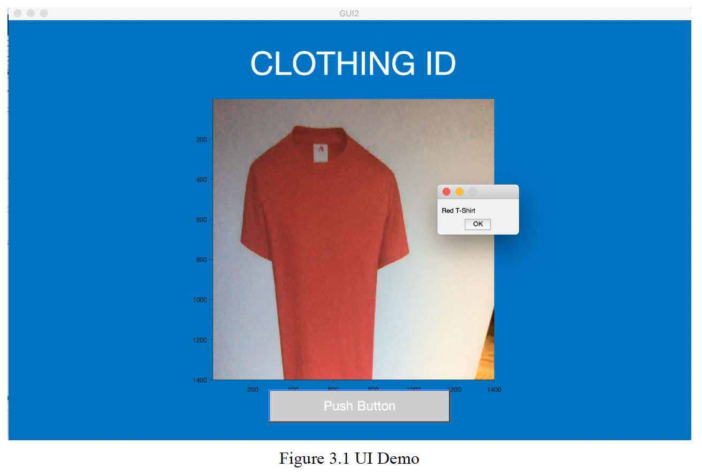
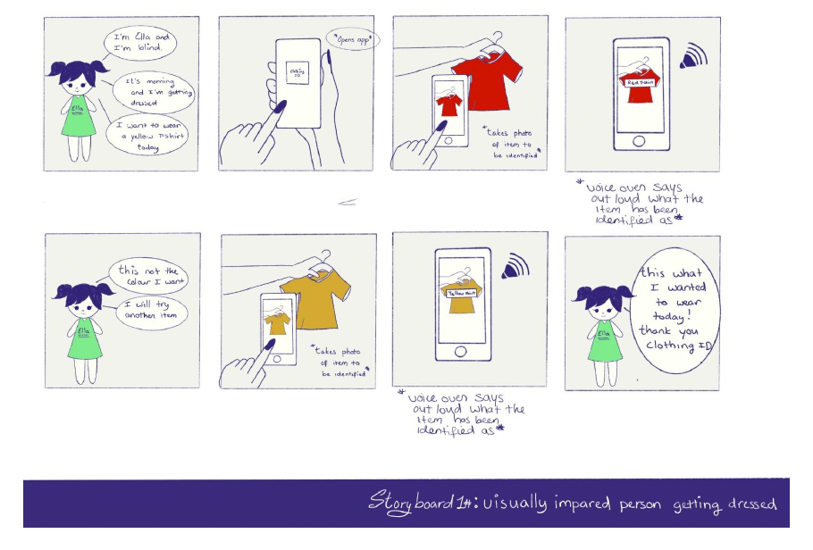
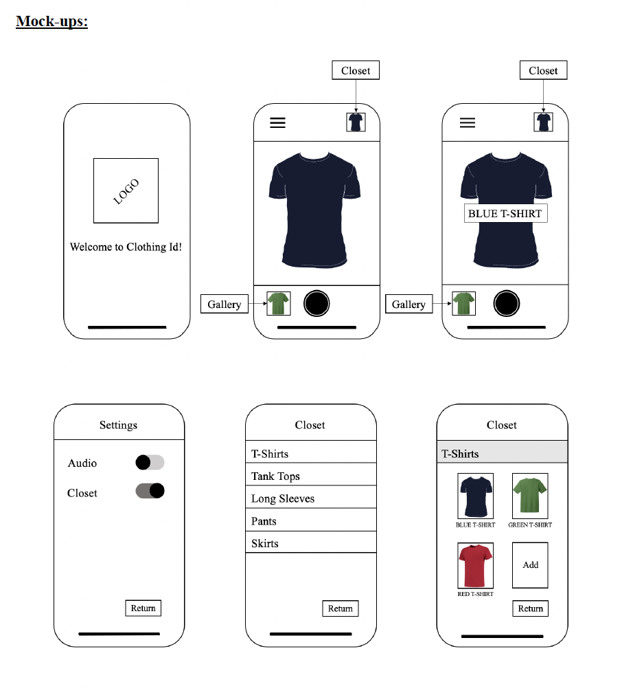

Neural Networks · Image Processing
Created a device that helped visually impaired people identify the clothing they wished to wear.
The main objective of pervasive computing is to embed computational capability into everyday objects to make them effectively perform useful tasks, and ultimately, improve users’ lives. Collaborating with fellow students, we conceptualised and developed a specialised device designed to assist visually impaired individuals in identifying the clothing they wish to wear.
The interaction was simple: the user positioned a piece of clothing in front of a camera, captured an image of it, and received audible feedback detailing the type of clothing they were holding, for example “blue t-shirt,” “red skirt,” “brown jacket,” or “black pants.”

The device used morphological techniques to refine captured images, aiding shape recognition through edge detection, and enabled it to discern item colours as well. We used neural networks and conducted training to improve the device’s recognition capabilities, ensuring a more accurate and reliable result.
Our project report included a thorough risk analysis, a review of relevant literature, a concept of operations outlining the intended device functioning, detailed system requirements, and storyboards illustrating key use case scenarios, alongside explanations of the techniques used, mock-ups, a full code overview, testing procedures, and an evaluation.
These are an example of a storyboard and mock-up from our design process.


This is a demo of the finished device in use.